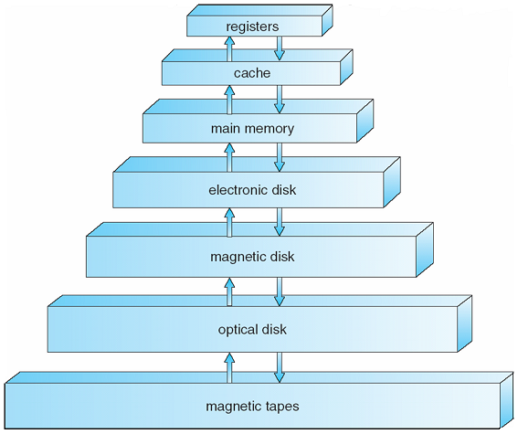
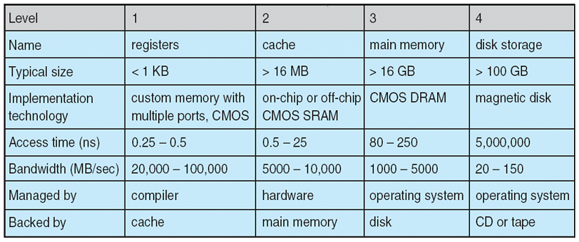
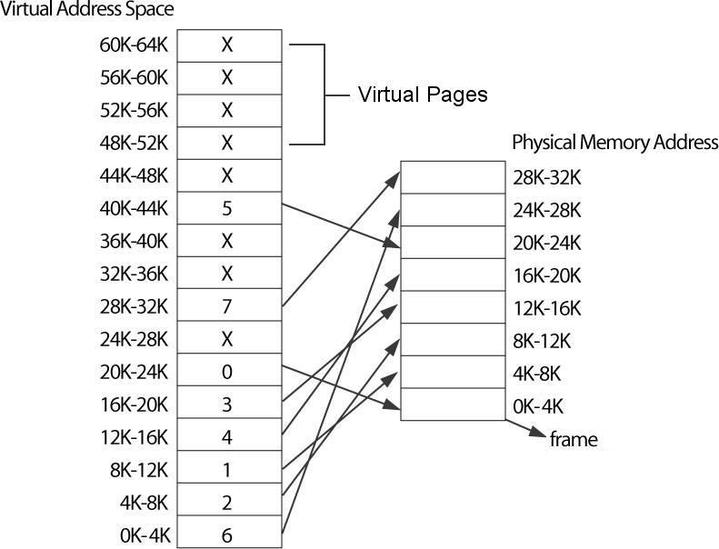
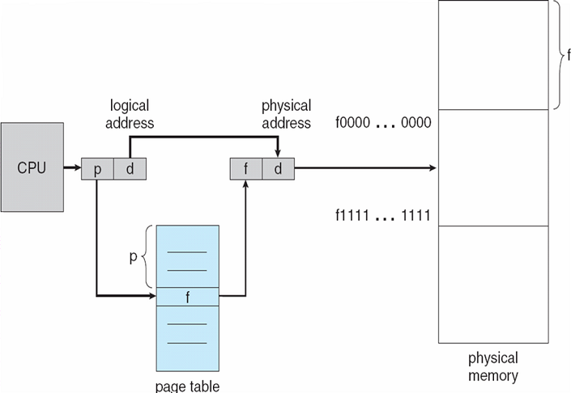
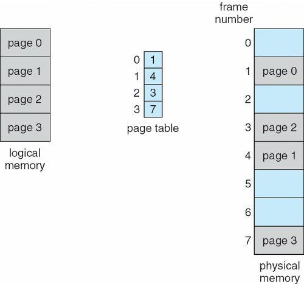
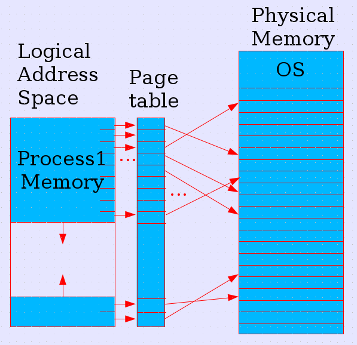
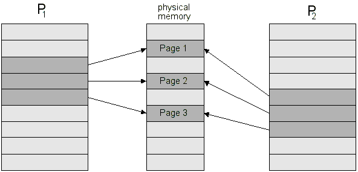
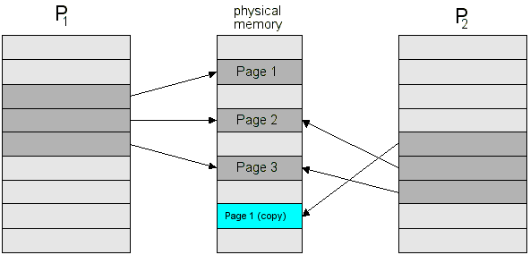
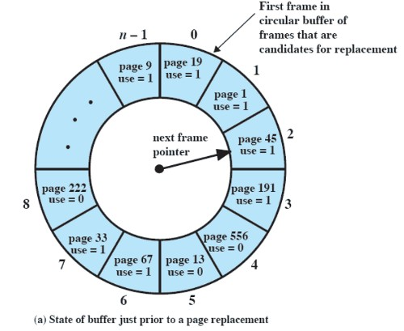
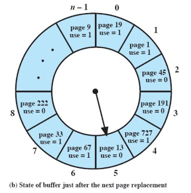

Overview
Memory is one of the most important parts of a computer and without it computers would be very limited.
 Operating System Concepts - 8th Edition Silberschatz, Galvin, Gagne ©2009
Some Numbers Regarding Memory  Operating System Concepts - 8th Edition Silberschatz, Galvin, Gagne ©2009
Reading an integer from disk Operating System Concepts - 8th Edition Silberschatz, Galvin, Gagne ©2009
The Importance of Cache
Row major Column major 0 1 2 3 4 5 6 7 8 9 10 11 12 13 14 15 16 17 18 19 20 21 22 23 24 25 26 27 28 29 30 31 32 33 34 35 36 37 38 39 40 41 42 43 44 45 46 47 48 49 50 51 52 53 54 55 56 57 58 59 60 61 62 63 64 65 66 67 68 69 70 71 72 73 74 75 76 77 78 79 80 81 82 83 84 85 86 87 88 89 90 91 92 93 94 95 96 97 98 99
Row: 0 1 2 3 4 5 6 7 8 9 10 11 12 13 14 15 16 17 18 19 20 21 22 23 24 25 26 27 28 29 etc... Col: 0 10 20 30 40 50 60 70 80 90 1 11 21 31 41 51 61 71 81 91 2 12 22 32 42 52 62 72 82 92 etc...
Access row-at-a-time Access column-at-a-time int row_major(int *array, int stride) { int i, j, index = 0, count = 0; printf("Row major:\n"); for (i = 0; i < stride; i++) { for (j = 0; j < stride; j++) { index = i * stride + j; array[index] = count++; } } return index; }int col_major(int *array, int stride) { int i, j, index = 0, count = 0; printf("Col major:\n"); for (i = 0; i < stride; i++) { for (j = 0; j < stride; j++) { index = j * stride + i; array[index] = count++; } } return index; }
With optimization (gcc -O2 mem1.c)
Access row-at-a-time Access column-at-a-time
Access row-at-a-time Access column-at-a-time
Data structures performance comparison
/* 4 million (222) */
#define SIZE 1024 * 1024 * 4
/* All data together */
struct GRAPHICS_DATA
{
int red;
int green;
int blue;
int alpha;
};
/* Array of structs containing all data */
struct GRAPHICS_DATA data[SIZE];
/* Colors in separate arrays */
int reds[SIZE];
int greens[SIZE];
int blues[SIZE];
int alphas[SIZE];
int main(void)
{
int i;
#if 1
for (i = 0; i < SIZE; i++)
data[i].red = i % 255;
#else
for (i = 0; i < SIZE; i++)
reds[i] = i % 255;
#endif
return 0;
}
Suppose we added more data to the structure (not uncommon)Array of structs: 0.033s Array of ints: 0.015s
struct GRAPHICS_DATA
{
int red;
int green;
int blue;
int alpha;
double x, y, z; /* add more data */
};
Array of structs: 0.064s
These times are directly related to memory and cache access times. It demonstrates that, if your code requires top performance, you need to understand how your data is structured. You don't just want to blindly lump all data together, unless it's absolutely necessary.
Physical vs. Logical Addresses
Physical memory
/* address.c */
#include <stdio.h>
int global = 5;
int main(void)
{
int local = 10;
static int st = 20;
printf("address of global is %p, value is %i\n", (void*)&global, global);
printf("address of local is %p, value is %i\n", (void*)&local, local);
printf("address of static is %p, value is %i\n", (void*)&st, st);
getchar(); /* poor man's pause */
return 0;
} |
Output:
| 3 instances running on Windows XP (32-bit) | 3 instances running on Linux (64-bit) | |
|---|---|---|
address of global is 0040D000, value is 5 address of local is 0012FF74, value is 10 address of static is 0040D004, value is 20 address of global is 0040D000, value is 5 address of local is 0012FF74, value is 10 address of static is 0040D004, value is 20 address of global is 0040D000, value is 5 address of local is 0012FF74, value is 10 address of static is 0040D004, value is 20 |
address of global is 0x601028, value is 5 address of local is 0x7fff039dd77c, value is 10 address of static is 0x60102c, value is 20 address of global is 0x601028, value is 5 address of local is 0x7fff8cdabdfc, value is 10 address of static is 0x60102c, value is 20 address of global is 0x601028, value is 5 address of local is 0x7fffb193203c, value is 10 address of static is 0x60102c, value is 20 |
| 3 instances running on Windows 7 (64-bit) | 3 instances running on Windows 10 (64-bit) |
|---|---|
address of global is 000000013FCF5000, value is 5 address of local is 000000000017F9E0, value is 10 address of static is 000000013FCF5004, value is 20 address of global is 000000013F175000, value is 5 address of local is 00000000001AFA80, value is 10 address of static is 000000013F175004, value is 20 address of global is 000000013F685000, value is 5 address of local is 00000000002AF7C0, value is 10 address of static is 000000013F685004, value is 20 |
address of global is 00007FF663715000, value is 5 address of local is 000000F5E930F8D0, value is 10 address of static is 00007FF663715004, value is 20 address of global is 00007FF6DD465000, value is 5 address of local is 0000009B2CB4FE80, value is 10 address of static is 00007FF6DD465004, value is 20 address of global is 00007FF6AA0C5000, value is 5 address of local is 00000041A52FFAC0, value is 10 address of static is 00007FF6AA0C5004, value is 20 |
Dynamic Loading
#include <stdio.h>
void printme(const char *str)
{
printf("Hello from library: %s\n", str);
}
int add(int a, int b)
{
return a + b;
}
This can easily be statically linked with main1.c
#include <stdio.h>
void printme(const char *str);
int add(int a, int b);
int main(void)
{
printme("This function is statically linked.");
printf("The sum of 5 and 10 is %i.\n", add(5, 10));
return 0;
}
Output:gcc main1.c hello.c -o hello-static
Hello from library: This function is statically linked. The sum of 5 and 10 is 15.
gcc -fPIC -c hello.c -o hello.o gcc -shared hello.o -o libhello.so gcc main.c -o main -ldl
May need the entire path to the linker (if GCC's linker is in the path first). For example:cl /c hello.c /Fohello.obj link /dll hello.obj /out:hello.dll
Then, create the executable that will use the DLL:"C:\Program Files\Microsoft Visual Studio 10.0\vc\bin\link" /dll hello.obj /out:hello.dll
And run it. It should fail.cl wmain.c /Fewmain.exe
The module definition file is a simple text file that looks like this:
And this is the link command:EXPORTS printme add
link /dll /def:hello.def hello.obj /out:hello.dll
Note: The C programming language has been around for a long time and is still one of the most popular languages of all time. Though some consider it antiquated, it is unlikely it will cease to exist any time soon. DLLs and shared objects are used everywhere and need to have a C interface. Almost every program, regardless of the programming language used, on all major platforms (Windows, Linux, Mac OS, Android, iOS) use these libraries, even though the programmers may not even be aware of it.
Stack and Heap
float *foo(int count)
{
int i;
float *array = malloc(count * sizeof(float));
for (i = 0; i < count; i++)
array[i] = sqrt((float)i);
return array;
}
Paging
Page tablesPage tables
 Operating System Concepts - 8th Edition Silberschatz, Galvin, Gagne ©2009
 Operating System Concepts - 8th Edition Silberschatz, Galvin, Gagne ©2009
 Operating System Concepts - 8th Edition Silberschatz, Galvin, Gagne ©2009
0 | 1234h 1 | 0234h 2 | 8234h 3 | 4234h
Virtual Memory
Virtual memory allows us to pretend that we have (almost) unlimited amounts of memory.Virtual memory space


Historic description
Under Linux, fork(2) is implemented using copy-on-write pages, so the only penalty incurred by fork(2) is
the time and memory required to duplicate the parent's page tables, and to create a unique task structure
for the child. However, in the bad old days a fork(2) would require making a complete copy of the caller's
data space, often needlessly, since usually immediately afterward an exec(3) is done. Thus, for
greater efficiency, BSD introduced the vfork() system call, which did not fully copy the address space of
the parent process, but borrowed the parent's memory and thread of control until a call to execve(2) or
an exit occurred. The parent process was suspended while the child was using its resources. The use of
vfork() was tricky: for example, not modifying data in the parent process depended on knowing which variables
were held in a register.
7, 0, 1, 2, 0, 3, 0, 2, 0, 4, 0, 2
7 fault [7 ] 0 fault [7 0 ] 1 fault [7 0 1] 2 fault [0 1 2] 0 ok [0 1 2] 3 fault [1 2 3] 0 fault [2 3 0] 2 ok [2 3 0] 0 ok [2 3 0] 4 fault [3 0 4] 0 ok [3 0 4] 2 fault [0 4 2]
Operating System Internals and Desgin Principles - 5th Edition William Stallings ©2005
 
7, 0, 1, 2, 0, 3, 0, 2, 0, 4, 0, 2
7 fault [7+ ] 0 fault [7+ 0+ ] 1 fault [7+ 0+ 1+] 2 fault [2+ 0- 1-] 0 ok [2+ 0+ 1-] 3 fault [2+ 0- 3+] 0 ok [2+ 0+ 3+] 2 ok [2+ 0+ 3+] 0 ok [2+ 0+ 3+] 4 fault [4+ 0- 3-] 0 ok [4+ 0+ 3-] 2 fault [4+ 0- 2+]
7, 0, 1, 2, 0, 3, 0, 2, 0, 4, 0, 2
Time
7 fault [7(0) ] 0
0 fault [7(0) 0(1) ] 1
1 fault [7(0) 0(1) 1(2)] 2
2 fault [0(1) 1(2) 2(3)] 3
0 ok [1(2) 2(3) 0(4)] 4
3 fault [2(3) 0(4) 3(5)] 5
0 ok [2(3) 3(5) 0(6)] 6
2 ok [3(5) 0(6) 2(7)] 7
0 ok [3(5) 2(7) 0(8)] 8
4 fault [2(7) 0(8) 4(9)] 9
0 ok [2(7) 4(9) 0(10)] 10
2 ok [4(9) 0(10) 2(11)] 11
Abstract: As CPU cores become both faster and more numerous, the limiting factor for most programs is now, and will be for some time, memory access. Hardware designers have come up with ever more sophisticated memory handling and acceleration techniques—such as CPU caches—but these cannot work optimally without some help from the programmer. Unfortunately, neither the structure nor the cost of using the memory subsystem of a computer or the caches on CPUs is well understood by most programmers. This paper explains the structure of memory subsystems in use on modern commodity hardware, illustrating why CPU caches were developed, how they work, and what programs should do to achieve optimal performance by utilizing them.